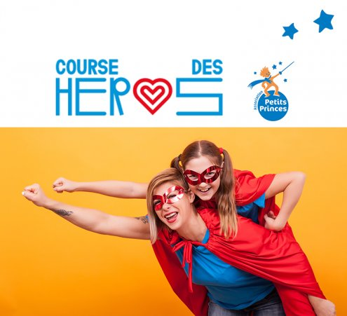
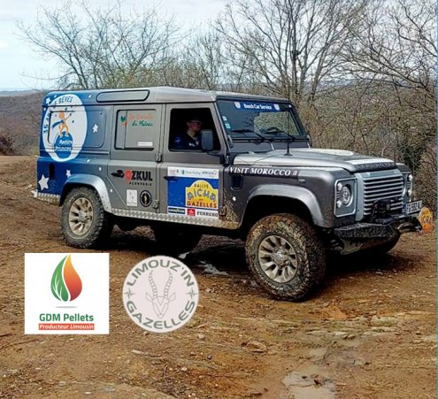

Du 21 mars au 18 mai 2022, célébrons ensemble les 35 ans de l’Association Petits Princes !
Les partenaires de l'Association Petits Princes se sont associés pour organiser une tombola exceptionnelle au profit des enfants malades.
En achetant un ticket à 5 € vous avez une chance de gagner : un séjour au Club Med, des billets d’avion pour New York, un an de chocolat, ou bien l'un des 75 lots offerts par nos partenaires …

Ouverture des inscriptions pour la Course des Héros 2022 !
Cette année encore, relevez le défi et devenez un héros pour nos petits princes et petites princesses.
La Course des Héros revient dans son format originel en présentiel dans quatre villes : Bordeaux, Paris, Lyon et Nantes.
Votre mission, si vous l’acceptez, est de collecter 250 € minimum pour l’Association Petits Princes via une page de collecte en ligne. (Ces dons sont déductibles des impôts à hauteur de 66%, un don de 30 € ne coutera que 10.20€).
Vous pourrez alors participer à la course en choisissant le parcours de 2km ou 6km en marchant ou le parcours de 6km ou 10km en courant aux couleurs de l’Association Petits Princes.
Un rallye-raid féminin et solidaire

Du 18 mars au 2 avril, Christelle Puychaffray et Pauline Tarnaud participeront au rallye Aïcha des Gazelles du Maroc en portant les couleurs de l’Association Petits Princes !
Un rallye-raid hors-piste, féminin et à l’ancienne : zéro portable, zéro GPS et zéro climatisation !
Un vrai défi que soutient l’entreprise GDM Pellets qui offre un généreux don à l’Association pour la réalisation de nouveaux rêves d’enfants gravement malades. Nous n’avons qu’à leur souhaiter bonne route et bon courage !